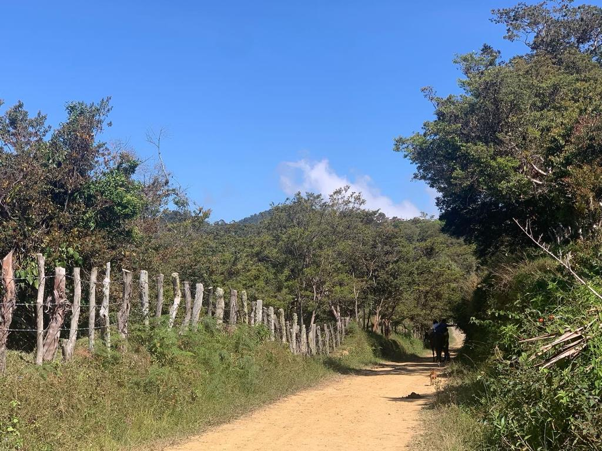
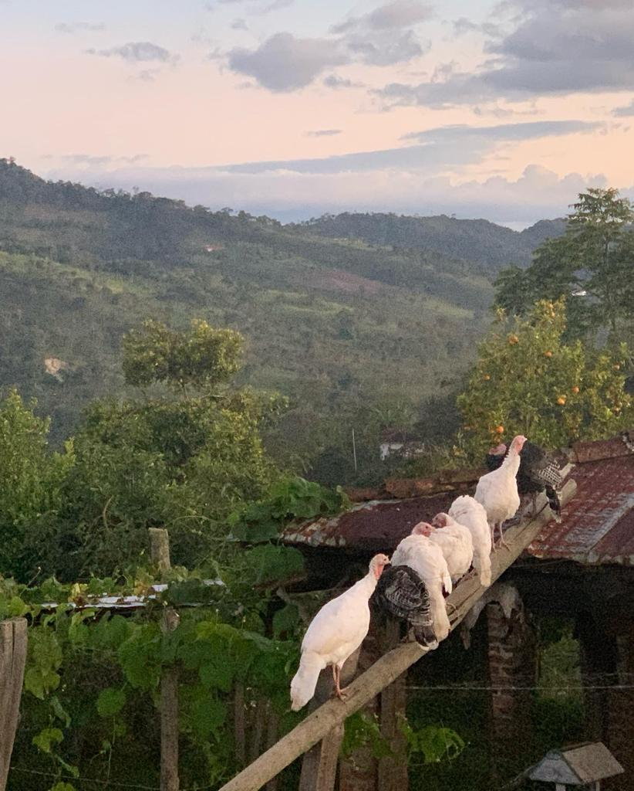
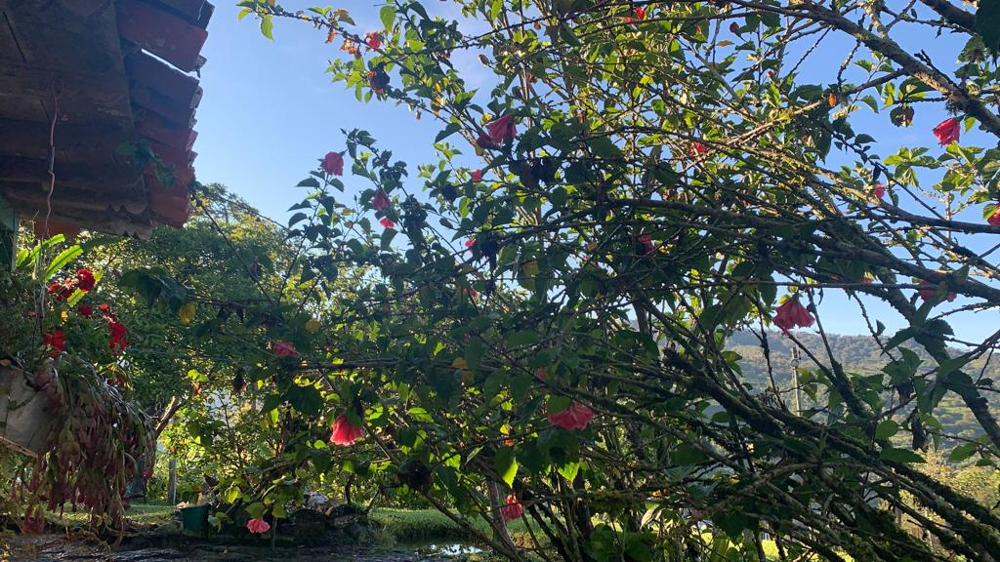
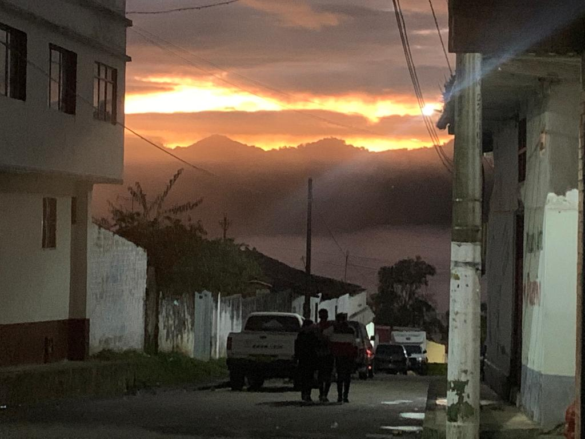

“Les Unités Sémiotiques Temporelles sont des fragments sonores qui, même hors de leur contexte musical, possèdent une signification temporelle due à leur organisation”
{Las Unidades Semióticas Temporales son fragmentos sonoros que, aun fuera de su contexto musical, tienen un significado temporal debido a su organización}.
En la investigación de Favory (2007) las USTM representan el inconveniente de que, al momento de abordar las músicas electroacústicas, donde en vez de ser un instrumento el que ejerce las notas, es un material sonoro grabado. El autor, sin ninguna intención de estandarización, propuso una clasificación según criterios morfológicos de las USTM. Gracias a la “escucha reducida” (término del docente Pierre Schaeffer) la cual consiste en ignorar las causales asociativas a un contexto, y escuchar el sonido por sus propias características, se logró establecer tres clasificaciones de las USTM y es según criterio morfológico, temporal y estructural.
El torbellino, declara Ariza en entrevista:
“Es que el moño era un torbellino versiado y eso lo hacían mucho cuando eran las romerías Vélez-Chiquinquirá y se iban grupos incluso antagónicos políticos, por ejemplo, la zona donde nació mi papá es muy liberal y por mi abuelo que desde Bolívar se trasladó a esa zona porque era liberal, porque en Bolívar es muy conservador pero cuando se iban para la romerías se encontraban los liberales que iban del Uvito con los de Bolívar que iban para lo mismo, viene el vainazo yo le hecho su vainazo y el otro, “pero como me voy a quedar con esa”, pero como iban para el mismo sitio, tenían que haber algún acuerdo porque si no se agarraban a machete, uno de este clan se ponía a bailar con este de otro clan, esos conservadores mandaban la señorita y los otros aquí el señorito, y se bailaban el torbellino y se echaban la copla y moño: moño para él moño para ella, y ahí resultaba los matrimonios liberales-conservadores, y ese es el famoso torbellino versiado es el famoso moño que en Jesús María es el Festival del Moño es cerca de Puente por la vía Jesús María, Florián, La belleza, Sucre y Bolívar” (H. R. Ariza, comunicación personal, 2022).


Se define como bambuco al baile, música y expresión cultural que se ha
interpretado desde principios del siglo XIX en todas las regiones andinas de Colombia. De
las primeras nociones que se tienen de este aire es que se fue extendiendo desde el Gran
Cauca hacia todo el país, pero en especial hacia el sur y el centro, incluso llegando a
otros países vecinos como Perú, estableciéndose con gran auge como la danza y música
insignia colombiana, pero también siendo pretensión política. El bambuco es asociado a
las clases bajas, siendo denigrado, excluido, silenciando sus verdaderos orígenes africanos
e indígenas, pero este estilo musical también estuvo asociado con la música militar, siendo
interpretada por las bandas de vientos de la época. Es así como el bambuco gana fuerza en
toda la sociedad, siendo posteriormente estilizado e influenciado por corrientes como el
romanticismo, lo cual le permite ser aceptado en los salones de los estratos altos. Existen
en cada región colombiana una manera y formato diferente de interpretar el bambuco. En la
zona del Pacífico se interpretan currulaos, bambuco viejo, arrullos y jugas, variantes del
bambuco caucano, que se interpretaba con flautas y tamboras. En la zona sur se siguen
interpretando las rajaleñas, el bambuco guambiano, el bambuco del Macizo, entre otros.
Y en la zona de los Santanderes, la guabina y el torbellino, interpretada con tiple,
guitarra y bandola. (Miñana, 1997)
Según Serrano Giraldo:
En el contexto de la configuración folclórica veleña, se denomina guabina el canto a capella de coplas con preludio e interludios de música instrumental de torbellino. Bajo esta denominación, en diferentes regiones colombianas se dan múltiples manifestaciones que responden a características disímiles. En este caso, nos referimos exclusivamente a la guabina en su manifestación ubicada en la región oriental de la provincia veleña, que comprende fundamentalmente los municipios de Vélez, Bolívar, Chipatá, Guavatá, Puente Nacional, Jesús María, La Paz, La Aguada, Güepsa y Barbosa.
Siendo de origen español por las coplas, los cantos de guabina se desarrollan entonces en las regiones andinas colombianas, más exactamente en los Santanderes, Boyacá, Cundinamarca, donde aún son interpretadas, en el contexto de las labores de casa, fiestas y celebraciones religiosas. Estos cantos son interpretados a dos, tres o más voces, generalmente femeninas, aunque también masculinos, alternando entre coplas y el aire de torbellino, acompañados por el tiple, el requinto, la guitarra, la carraca, las cucharas, la tambora, el chucho, el quiribillo, la esterilla, la zambumbia o marrana, la pandereta y las maracas.
